Voir ce qu'un attaquant voit, sans jamais agir comme lui.
Toute attaque ciblée commence par une phase de reconnaissance. Le but de ce projet était de la reproduire du point de vue du défenseur : identifier ce qu'une organisation laisse visible sur Internet, puis traduire ces observations en risques et en recommandations concrètes.
Passif uniquement
Résolution DNS, consultation de Maltego et des données déjà indexées par Shodan. Aucune intrusion, aucune exploitation, aucun balayage.
Données protégées
Les courriels de particuliers et l'identité de nos interlocuteurs ont été masqués dans le rapport.
Prévenir plutôt que garder
Face à un serveur particulièrement exposé, nous avons averti l'organisation concernée.
Deux outils, deux questions complémentaires.
Shodan indexe des machines : il dit ce qui est exposé. Maltego construit un graphe : il montre ce qui est relié à quoi. Seuls, chacun a un angle mort. Combinés, ils permettent de délimiter le périmètre d'une organisation, puis de qualifier l'exposition de chaque actif.
Nom de domaine
Le point de départ public de l'organisation.
Périmètre
Serveurs de noms, adresses IP, courriels, domaines liés.
Exposition
Ports ouverts, services, versions, hébergeur.
Attribution
Prouver que chaque actif appartient bien à la cible.
Risques
Constats priorisés et recommandations.
↺ Un résultat Shodan (nom d'hôte, certificat) redevient une nouvelle entité dans Maltego.
| Shodan | Maltego | |
|---|---|---|
| Question | Qu'est-ce qui est exposé, et comment ? | Qu'est-ce qui est relié à quoi ? |
| Entrée | Requête, filtre ou adresse IP | Entité (domaine, IP, courriel…) |
| Résultat | Liste d'hôtes et fiche détaillée | Graphe d'entités et de relations |
| Force | Visibilité technique des services | Corrélation et visualisation |
| Angle mort | Peu de contexte organisationnel | Peu d'information sur les services |
De l'installation au premier graphe.
Nous avons documenté pas à pas l'installation de Maltego Graph 4.13 (édition Community) sur Kali Linux, puis la construction d'un graphe à partir du domaine public gnu.org. Choix délibéré : les transformations ont été lancées une à une, et deux d'entre elles ont été écartées, le transfert de zone et la recherche de sous-domaines par dictionnaire, car elles sollicitent activement les serveurs ciblés.
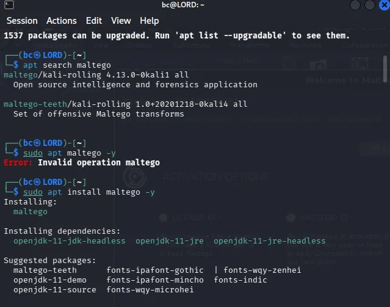
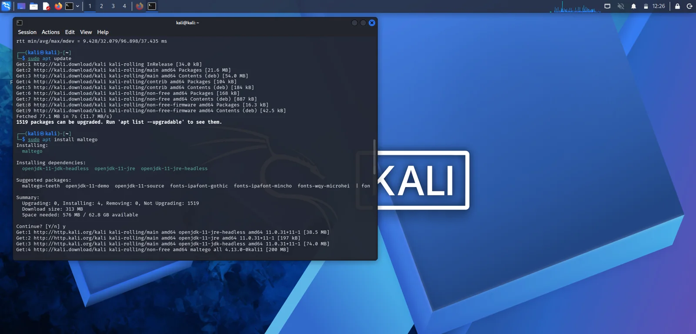
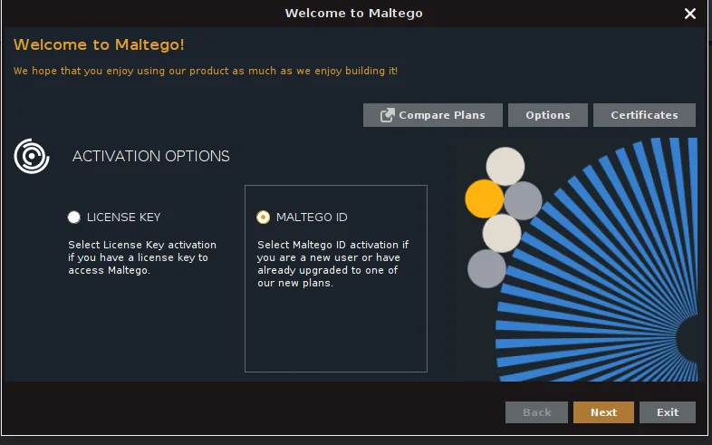
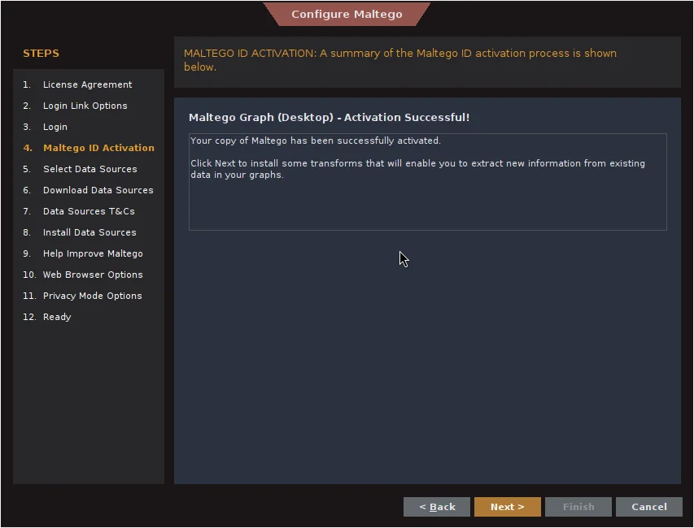
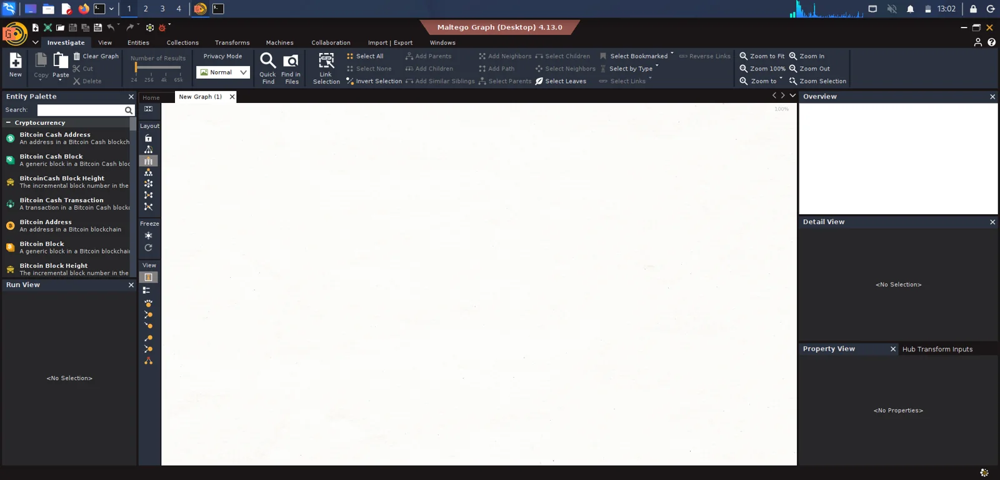
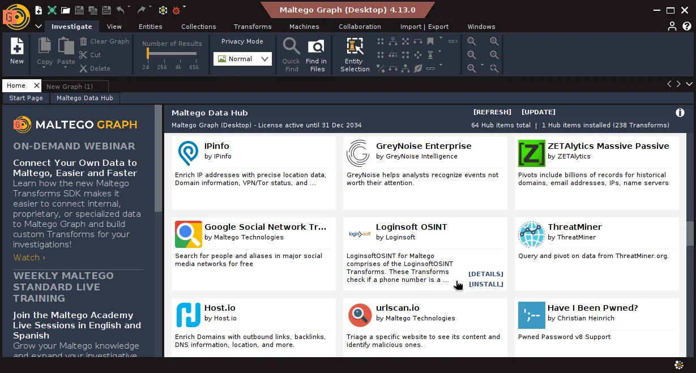
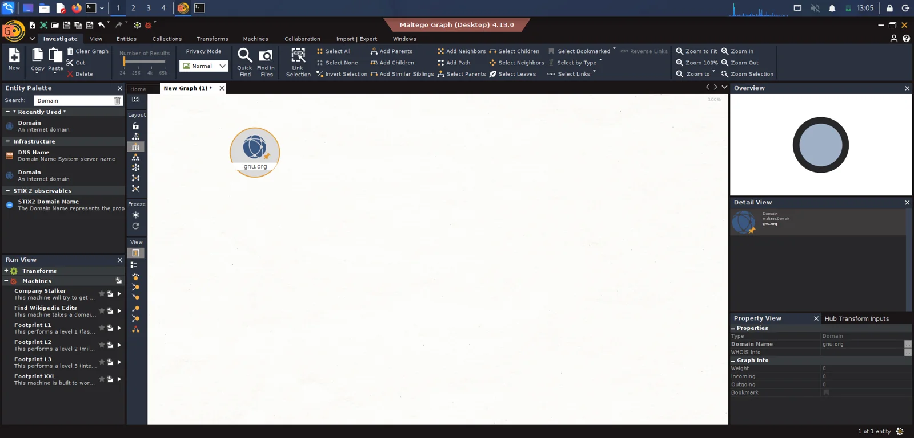
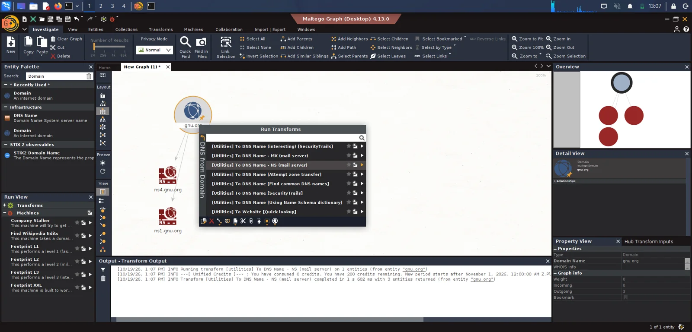
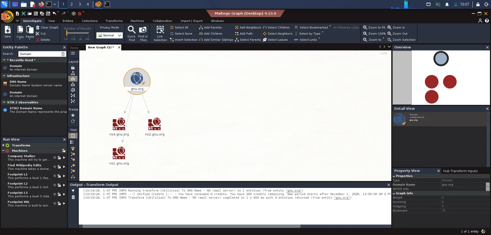
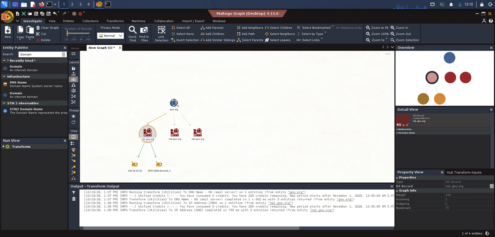
Ce que le graphe apprend : une résolution DNS redondante (bonne pratique) et un serveur joignable en IPv4 comme en IPv6, soit deux chemins d'accès à surveiller. Maltego s'arrête cependant aux adresses : il ne dit rien des services qui y répondent. C'est là que Shodan prend le relais.
Le moteur de recherche des machines exposées.
Là où Google indexe des pages, Shodan indexe des services : il balaie Internet en continu et enregistre ce que chaque machine annonce d'elle-même. Une recherche brute renvoie des millions de résultats. Tout l'art consiste à l'affiner avec des filtres pour isoler les configurations à risque.
port:23hôtes exposant Telnet, protocole qui transmet tout en clairtitle:"RouterOS"pages d'administration de routeurs accessiblesproduct:MongoDBbases de données joignables depuis Internet"MongoDB" country:CAaprès filtrage par pays : le Canada seulDans les captures ci-dessous, la liste des machines a été masquée : seules la requête et les statistiques agrégées restent visibles. Publier les adresses de systèmes vulnérables reviendrait à désigner des cibles.
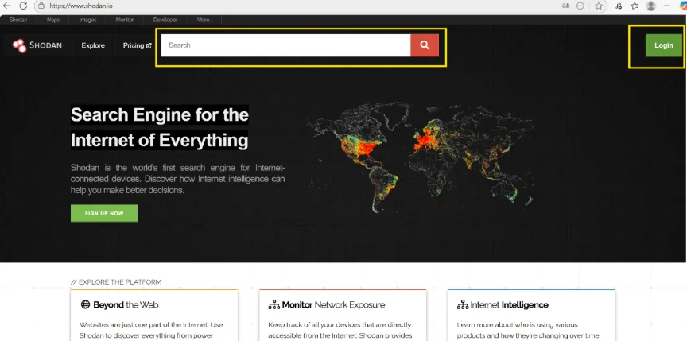
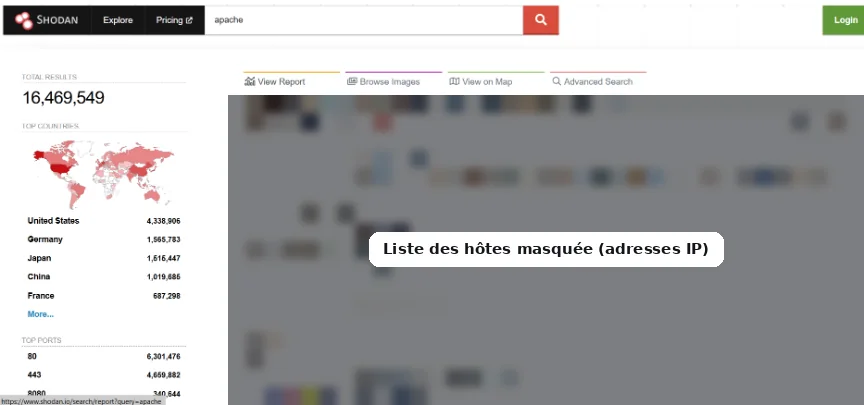
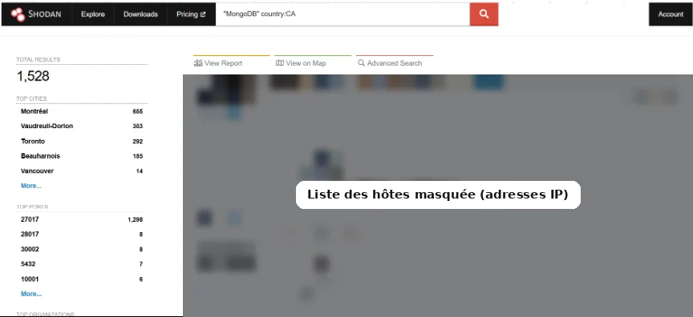
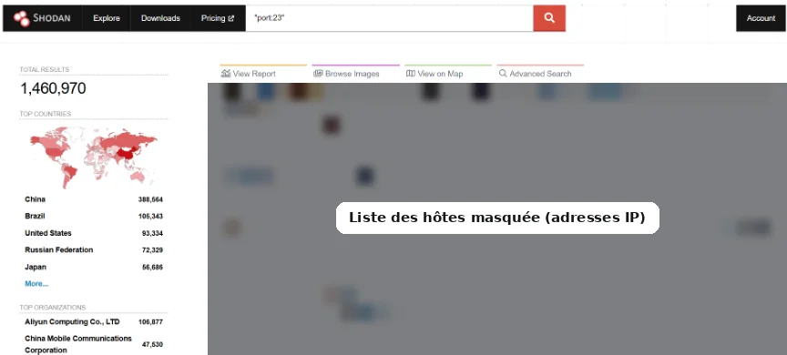
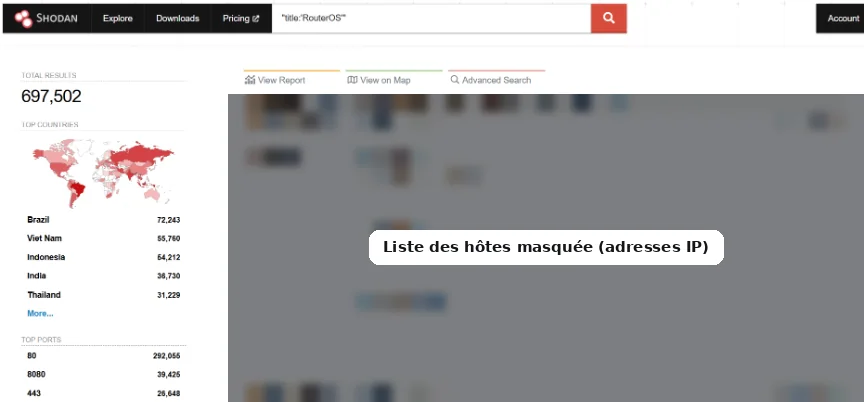
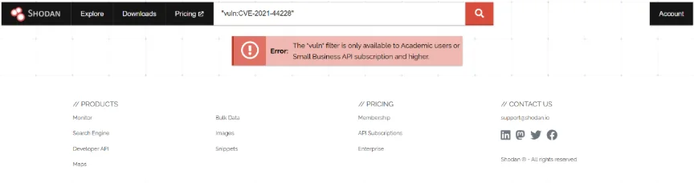
Lire une fiche hôte : identité réseau (adresse, hébergeur, ASN), ports ouverts, bannières, d'où l'on déduit les logiciels et leurs versions, puis le contexte (certificat TLS, date du balayage). La question à se poser : ce service a-t-il vraiment besoin d'être joignable depuis Internet, et sa version est-elle à jour ?
Deux organisations, une même histoire.
Nous avons appliqué la méthode à deux organisations réelles dont l'infrastructure est visible depuis Internet. La première analyse s'appuie sur Shodan et son API gratuite InternetDB ; la seconde croise Maltego et Shodan.
Version publique anonymisée. Les noms, domaines, adresses IP et versions logicielles des organisations étudiées ont été retirés. Ils figurent uniquement dans le rapport remis à l'enseignant.
Opérateur d'infrastructure télécom
Un acteur dont l'infrastructure sert d'autres organisations : un incident chez lui aurait des répercussions bien au-delà de l'entreprise.
- Un seul serveur concentre l'hébergement Web, le DNS, la messagerie et trois interfaces d'administration (SSH, panneaux de gestion d'hébergement).
- Le serveur héberge aussi le domaine d'un client : une compromission toucherait l'opérateur et ses clients.
- 30 CVE déduites des versions annoncées, à traiter comme des pistes d'investigation et non comme des failles confirmées.
Plateforme Web de petites annonces
Un site dynamique hébergé chez un fournisseur cloud. Maltego relie une trentaine d'entités au site.
- Une base de données joignable depuis Internet, cible directe pour le vol des données des annonceurs.
- Un serveur Web dans une version qui n'est plus maintenue, et un accès SSH ouvert à tous.
- Dix courriels personnels d'annonceurs publiés en clair, exploitables par des robots d'hameçonnage.
- Une forte dépendance à des scripts tiers, dont un CDN abandonné par son auteur.
Le cœur du métier : prouver l'attribution
Une adresse IP n'appartient pas forcément à l'organisation dont le site y est hébergé : le serveur de l'organisation B est loué chez un fournisseur cloud. Avant de parler de risque, il faut donc démontrer le rattachement. Nous l'avons fait avec trois indices concordants :
DNS
Le nom du site se résout vers l'adresse étudiée.
Contenu
Le titre de page vu par Shodan est identique à celui extrait par Maltego.
Architecture
Les services exposés (proxy inverse, base de données) correspondent à un site dynamique, pas à un hébergement mutualisé générique.
À l'inverse, la plupart des domaines liés (Google, Meta, CDN) sont des services tiers : ils élargissent la surface de dépendance du site sans faire partie de son périmètre.
| Constat | Org. | Risque potentiel | Niveau |
|---|---|---|---|
| Base de données exposée sur Internet | B | Recherche de mots de passe, exploitation du moteur, fuite des données | Élevé |
| Interfaces d'administration exposées | A | Prise de contrôle du serveur et des comptes hébergés | Élevé |
| Serveur Web non maintenu | B | Failles connues, dont un déni de service (à confirmer) | Élevé (à confirmer) |
| SSH ouvert à tous | A · B | Force brute, failles connues selon la version | Moyen |
| Courriels personnels publiés | B | Collecte automatisée, hameçonnage des vendeurs | Moyen |
| Scripts tiers et CDN abandonné | B | Injection de code via une dépendance compromise | Moyen |
Les niveaux sont estimés à partir de données passives. Une version lue dans une bannière ne prouve rien à elle seule : seule une évaluation autorisée permettrait de confirmer ces hypothèses.
Découvrir un risque crée une responsabilité.
Compte tenu de l'importance du serveur de l'organisation A, l'équipe a choisi de la prévenir sans attendre. Un membre de l'équipe a contacté un ingénieur de l'entreprise pour lui signaler l'adresse concernée, sans détail technique exploitable, en suggérant que le responsable de la sécurité y jette un œil. Des recommandations ont ensuite été transmises à l'administrateur, regroupées par service.
Discrétion
Aucun détail exploitable dans le premier message : seulement l'actif concerné et une invitation à vérifier.
Bon interlocuteur
Passer par une personne technique de l'organisation, pour que l'information atteigne la sécurité informatique.
Aide concrète
Des recommandations actionnables, service par service, plutôt qu'une simple alerte.
Réduire ce qui dépasse, surveiller ce qui reste.
1. Fermer les portes d'administration
SSH et panneaux de gestion uniquement derrière un VPN ou une liste d'adresses autorisées, avec authentification par clés et MFA. Pas de connexion directe du compte root.
2. Sortir les bases de données d'Internet
Réserver le port de la base au serveur applicatif ou à un réseau privé, avec des comptes à mots de passe robustes.
3. Mettre à jour et masquer
Passer sur des versions maintenues, puis vérifier la nouvelle bannière dans Shodan. Masquer les numéros de version (server_tokens off).
4. Trier les CVE avec méthode
Vérifier les versions réellement installées et les correctifs déjà rétroportés, puis traiter d'abord les failles confirmées à risque élevé.
5. Assainir la chaîne d'approvisionnement Web
Remplacer les CDN abandonnés, tout charger en HTTPS, ajouter l'intégrité SRI aux scripts tiers, renforcer les en-têtes (CSP, HSTS).
6. Protéger les utilisateurs
Remplacer les courriels publiés par un formulaire ou des adresses relais protégés contre les robots, et vérifier que le stockage cloud n'est pas listable publiquement.
La meilleure défense : regarder régulièrement son infrastructure comme Shodan la voit, par exemple avec une surveillance de ses plages d'adresses, et réduire tout ce qui est exposé sans nécessité.
Ce que ce projet démontre.
Compétences mobilisées
- Reconnaissance OSINT passive avec Maltego et Shodan
- Attribution d'actifs par croisement de sources
- Qualification du risque à partir de données incomplètes
- Rédaction de tutoriels et de recommandations
- Travail en équipe de cinq analystes
Posture professionnelle
- Cadre éthique défini avant de commencer
- Refus des transformations intrusives
- Protection des données personnelles
- Divulgation responsable d'un risque réel
- Prudence dans les conclusions : hypothèses et non certitudes
Limites assumées : données passives datées du dernier balayage, outils en version gratuite (filtre « vuln: » indisponible, quotas Maltego). Les vulnérabilités citées restent des hypothèses que seule une évaluation autorisée permettrait de confirmer.